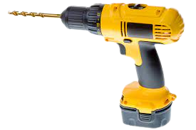
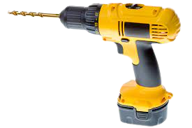
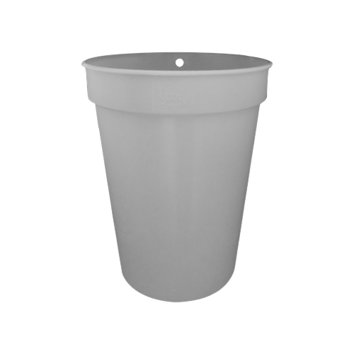
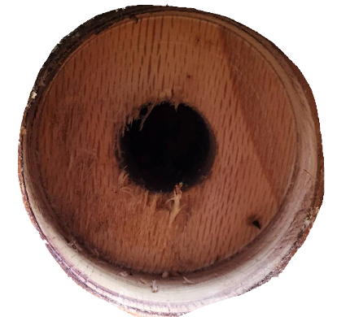
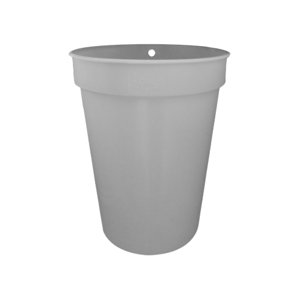
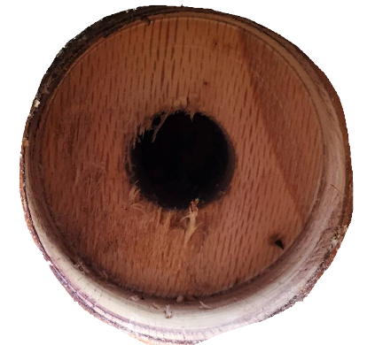

To tap a tree, you must first drill a hole in the tree. The hole needs to be
mostly straight,
but still angled upwards so that sap can flow out. After the hole
is drilled
about 1 to 1.5 inches deep, you then need to put the spile in. This lets
the sap flow out and into the bucket which is hung onto the spile.
 

 


